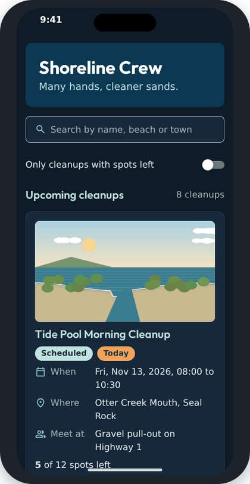

Session 7: Responsive, Platform-Specific and Themed UI
How to teach Lesson 2.5: Shoreline Crew notices the size of its window, the platform it runs on and the night. useWindowDimensions with one breakpoint, Platform and a first platform file, a dark set of every color role that TypeScript keeps complete, a typed theme with useTheme and styles made once per theme, the navigator and the status bar in the theme, and two columns on wide screens. Anything read once when a file loads goes stale; the session makes that the rule to remember.
How to Use This Guide
- Session rhythm: warm-up (retrieval on Session 6) → frame and mental models → two live demos → the guided lab → the project's first six steps together. Step 7, the exercises, the quiz, the journal and the phone's dark mode go home. This session closes Module 2.
- Type, do not paste. Every command below was run to produce the output printed under it, in a learner's terminal (Node 24): the mistakes on copies of the app exactly as a learner has it before and after Lesson 2.5, made the way the lesson's own verification made them; the lesson's window and platform snippets headless in Jest. Where the lesson shows the same command, the kit's output is the lesson's card.
- No phone was used to make this kit. The web preview shows the two columns (resize the window) and dark mode (the computer's setting, or Chrome DevTools > Rendering > prefers-color-scheme). The phone's own dark mode, the status bar's light icons, the ios and android branches, and Android's need for expo-system-ui for userInterfaceStyle (Expo's documentation) are described the way the lesson describes them.
- The lesson is the reference: keep
lesson_08.htmlopen for the contrast table, the platform tools table and the Mermaid theme flow. Labs live inlabs/module-07/. - The session's thread: everything is a value read while rendering (the window, the platform, the scheme). Anything read once, when a file loads, goes stale: a StyleSheet color, a Dimensions.get, a hook at the top of a file.
- Part 1 (Sessions 1 to 9) can run on its own. Teal blocks are hands-on, amber blocks are watch-outs.
Step 1 renames the colors export, and tsc reports nine errors. Some learners panic or start reverting. In the room: say it before Step 1: "in a minute TypeScript will list nine files; that list is our to-do list for the next forty minutes." Work down the list together, and after each file run npx tsc --noEmit again and read the count aloud. A learner who gets lost takes lesson-08-end's version of one file at a time, never the whole folder.
Before the Session
- ☐ Run the kit check once:
python3 labs/check_labs.py module-07(6 runs, about two minutes: the starter's tests fail three of five and its type check reports TS1360; the solution passes its tests, type check and lint, and bundles for the web). - ☐ Projector machine: VS Code on
shoreline-crew, the API and Metro running, the web preview in a browser you can resize and switch to dark mode (DevTools > ⋮ > More tools > Rendering > Emulate CSS media feature prefers-color-scheme);lesson_08.html; your phone with dark mode. - ☐ For the size demo: a copy of
labs/module-07/l2_5-responsive-platform-specific-and-themed-ui/solution/with the lesson's three snippets and the kit's test (Answer Key, "Demo files"); run it once at home. - ☐ Files to hand out: the lab's
starter/andTASKS.md;lesson-08-start.zipandlesson-08-end.zip(for the refactor's stragglers). - ☐ Board: the two mental models; the theme flow (phone setting → useColorScheme → useTheme → useStyles / colors for props → the screen redraws); "read while rendering, never once at load".
| Symptom | Cause | Fix |
|---|---|---|
| One screen stays Sand in dark mode | A color baked into StyleSheet.create | createThemedStyles. |
React Hook "useTheme" cannot be called at the top level | The hook next to the styles | createThemedStyles outside, useStyles() inside. |
Property 'trackOff' does not exist on type '{ primary: …' | expo-router's useTheme auto-imported | Import from @/hooks/useTheme. |
| The web preview is half dark, no error | No useColorScheme.web.ts (server-drawn first page) | The web file with the server snapshot 'light'. |
| The layout does not follow a resize | Dimensions.get at the top of a file | useWindowDimensions in a hook. |
| Android ignores dark mode in a build | userInterfaceStyle needs expo-system-ui on Android (Expo's docs) | Not needed in Expo Go today; the lesson names it. |
Session 7 Agenda (3 hours)
| Clock | Minutes | Segment | What happens |
|---|---|---|---|
| 0:00 | 10 | Warm-up: Lesson 2.4, retrieved | Three questions on Session 6 (onClick, onChangeText, the first tap and the keyboard), on paper then out loud. |
| 0:10 | 10 | 2.5 Frame and mental model | One app, many screens: tables at high and low tide (size), the beach at night (dark mode: the same jobs, a night kit). |
| 0:20 | 20 | 2.5 Live demo: size and platform | The lesson's snippets headless: the window followed, a stale Dimensions.get, a Platform branch; breakpoints in dp; platform files. |
| 0:40 | 15 | 2.5 Live demo: dark mode and the theme | Two palettes and satisfies (TS1360), createThemedStyles, a hook at the top of a file (lint), the other useTheme (TS2339), the half-dark web preview. |
| 0:55 | 15 | 2.5 Guided lab: Tasks 1 and 2 | labs/module-07/l2_5-responsive-platform-specific-and-themed-ui/starter: a night palette TypeScript keeps complete and a contrast test, then a tile that follows the night. |
| 1:10 | 10 | Break | Learners open lesson-08-start if their 2.4 project is not finished; the API and Metro running. |
| 1:20 | 10 | 2.5 Guided lab: Task 3 | Columns from the window instead of a stale read; debrief. |
| 1:30 | 50 | 2.5 Start the lesson project: Steps 1 to 3 | Together: the two palettes and tsc's nine-file to-do list, the theme and its hooks (and the web one), every component themed. |
| 2:20 | 30 | 2.5 Project Steps 4 to 6 | The navigator and the status bar, two columns from 700 and a 960 limit, then the app at night and wide. |
| 2:50 | 10 | Wrap-up | Exit ticket (3 questions), homework (Step 7 and the phone's dark mode go home), bring list for Session 8. |
| Total | 180 | Ends at 3:00. |
In the room. The lesson page estimates 145 minutes for a learner working alone; the room has 150: the mental models, the size and platform demo, the theme demo, the lab and Steps 1 to 6 together. Goes home (about 2 to 3 hours): Step 7 (lint, type check, commit), anything not finished, the phone's dark mode in Expo Go, Exercises 1 to 4, the Quick Quiz, the journal and the lab's leftovers.
Protect, in this order: Steps 1 to 3 (every later lesson uses createThemedStyles and useTheme); the satisfies and baked-in-color ideas; Step 5's useColumns (Lesson 3.1 hands it to FlatList's numColumns). Cut first: the four-tools platform step (the lesson's table), then the lab's Task 3 (home).
Opening Segment
Warm-up: Lesson 2.4, Retrieved
10 min| 4m | Three questions on the slide, answered on paper, no notes |
| 4m | Answers out loud |
| 2m | Bridge to today |
- A Pressable has
onClick={signUp}. What do tsc and lint say, and what does a tap do? Answer: Nothing and nothing: onClick type-checks and lints clean; a tap does nothing. Taps go to onPress. - The HQ's
onChange={(e) => setQuery(e.target.value)}on a TextInput: what replaces it? Answer:onChangeText={setQuery}: React Native hands you the new text as a string. - On a phone, a volunteer types in the search field and taps the clear button. What makes the first tap reach the button? Answer:
keyboardShouldPersistTaps="handled"on the scroll view (Screen sets it once).
"Last week you were asked to turn on dark mode on your phone and notice what still looks like daytime. Shoreline Crew does: every color is a daytime color baked in when its file loaded. Today the app notices the size of its window, the platform it runs on, and the night."
Lesson Plans
Responsive, Platform-Specific and Themed UI
150 min- Read the window's size with useWindowDimensions, choose a layout with breakpoints in density-independent pixels, and explain why Dimensions.get at the top of a file goes stale
- Handle real platform differences with Platform.OS, Platform.select, platform-only props and platform files (.ios.tsx, .android.tsx, .web.ts), and know when not to
- Follow the phone's light or dark setting with useColorScheme, and design a dark set of color roles that passes the same contrast checks as the light one
- Build a typed theme: palettes TypeScript keeps complete, a useTheme hook, and styles that are made once per theme
- Give the navigator and the status bar the theme's colors, and fix the web preview's server-drawn first page
| 10m | Frame: tables at high and low tide; the beach at night |
| 20m | Live demo 1: size and platform (headless snippets, breakpoints, the four tools, the web file) |
| 15m | Live demo 2: palettes, satisfies, createThemedStyles, the two mistakes |
| 15m | Guided lab: Tasks 1 and 2 |
| 10m | Guided lab: Task 3 and the debrief (after the break) |
| 50m | Start the lesson project: Steps 1 to 3 |
| 30m | Project Steps 4 to 6 |
From the lesson: "On a narrow strip of sand at high tide, the crew sets up one long line of tables, one behind the other. At low tide, with a wide beach, the same tables go two side by side. Nobody checks which beach it is: they look at how much sand there is right now, and they look again when the tide moves."
Then the night: "The crew's sunrise cleanups start in the dark. Nobody brings floodlights; they bring headlamps with a red setting and they wear reflective vests. The same beach, the same crew, the same jobs, with different equipment for each job. Your color roles are the jobs; the light and dark palettes are the day kit and the night kit."
Write the thread under them: read while rendering, never once when a file loads.
- Size is a number from a hook (6m). "No media queries: the window's size is a value your component reads while it renders." The kit ran the lesson's WindowSize, its
Dimensions.getsnippet and its PlatformNote in a copy of the lab's solution (AppText stood in by a plain Text): a 390 by 844 phone, then the window set to 1024 by 768 without a reload:npm test -- src/window.test.tsx cat window.txt
WindowSize, a phone: 390 by 844, text size ×1, 3 pixels per point WindowSize, after the resize: 1024 by 768, text size ×1, 2 pixels per point columns from Dimensions.get: 2 (read when the file loaded) PlatformNote: ios: Swipe from the left edge to go back
Line 1 and 2: the hook followed the resize, as the lesson measured in the web preview. Line 3: the top-levelDimensions.getread the window once, when the file loaded (Jest's default, before the test's phone), and never again. Line 4: Jest renders as iOS; the web preview took the default branch; a phone runs its own. - Breakpoints in dp (4m). Tables at high and low tide. Phones held upright 360 to 430, small tablets and phones on their side 700 and more, big tablets over 1000. Shoreline Crew uses one breakpoint, 700, in one hook:
shoreline-crew/src/hooks/useColumns.ts
import { useWindowDimensions } from 'react-native'; import { layout } from '@/theme/spacing'; // How many cards fit side by side in the window right now: 1 on a phone, 2 on a wider screen. // useWindowDimensions re-renders the component whenever the window changes size. export function useColumns() { const { width } = useWindowDimensions(); return width >= layout.twoColumns ? 2 : 1; }
Flex, percentages and maxWidth first; the window's size only when the structure changes (one column to two). - Four platform tools, smallest first (5m). Platform.OS, Platform.select (with default; spread into a style), platform-only props (
ios_backgroundColor,android_ripple), platform files (.ios.tsx,.android.tsx,.web.ts). Rules: size and features before platform (neverPlatform.isPadfor a layout); keep differences in one place (Icon's table); platform files share one set of types (tsc checks the plain file). - The web preview's first page (5m). Show the lesson's half-dark screenshot: the server drew the page light, the browser drew the cards dark, React kept both, no error. Then the fix, the project's first platform file:
shoreline-crew/src/hooks/useColorScheme.web.ts
export function useColorScheme() { return useSyncExternalStore(subscribe, getColorScheme, () => 'light' as const); }
useSyncExternalStore's third argument is "the value on the server": start as 'light' like the server, switch right after hydration.

- Two palettes, one set of jobs (3m). "The roles are the jobs; the palettes are the day kit and the night kit." The dark set ends with
satisfies ThemeColors:shoreline-crew/src/theme/colors.tsexport const darkColors = { page: night.page, surface: night.surface, border: night.border, text: night.ink, textMuted: night.muted, heading: brand.seafoam, error: night.coral, banner: brand.deepTide, onBanner: brand.white, onBannerAccent: brand.seafoam, icon: night.seaTeal, picture: night.raised, action: night.seaTeal, actionPressed: brand.seafoam, onAction: night.page, // dark text on the light Sea Teal pressed: night.raised, inputBorder: night.muted, knob: brand.white, trackOff: night.slate, } satisfies ThemeColors;
No pure black, raised means lighter, lighter accents (so onAction flips to dark text), the same 4.5:1 and 3:1 rules, and some colors stay on purpose (the badges, the banner). - A forgotten role (3m). Exercise 2 live: delete
trackOff: night.slate,from darkColors.npx tsc --noEmit
src/theme/colors.ts:74:3 - error TS1360: Type '{ page: "#0f1b26"; surface: "#16283a"; border: "#2b4257"; text: "#e9eef3"; textMuted: "#a9b4c0"; heading: "#bfe3df"; error: "#ff9b85"; banner: "#0b3954"; onBanner: "#ffffff"; onBannerAccent: "#bfe3df"; ... 7 more ...; knob: "#ffffff"; }' does not satisfy the expected type 'ThemeColors'. src/theme/theme.ts:22:27 - error TS2741: Property 'trackOff' is missing in type '{ page: "#0f1b26"; surface: "#16283a"; border: "#2b4257"; text: "#e9eef3"; textMuted: "#a9b4c0"; heading: "#bfe3df"; error: "#ff9b85"; banner: "#0b3954"; onBanner: "#ffffff"; onBannerAccent: "#bfe3df"; ... 7 more ...; knob: "#ffffff"; }' but required in type 'ThemeColors'. Found 2 errors in 2 files.Two errors: the palette itself (TS1360, "Property 'trackOff' is missing") and theme.ts, where it is used. satisfies puts the first one at the cause. Undo it. - Styles made once per theme (3m). "StyleSheet.create at the top of a file runs once, before any hook could tell it the scheme." The project's answer:
shoreline-crew/src/hooks/useTheme.ts
import { useColorScheme } from '@/hooks/useColorScheme'; import { type Theme, themes } from '@/theme/theme'; // The theme for the phone's current setting: light, or dark when the phone is in dark mode export function useTheme(): Theme { const scheme = useColorScheme(); return themes[scheme === 'dark' ? 'dark' : 'light']; } // Styles that use theme colors: made once for each theme, then picked by the current one. // Call it outside a component; it returns a hook to call inside one. export function createThemedStyles<T>(make: (theme: Theme) => T) { const sheets = { light: make(themes.light), dark: make(themes.dark) }; return function useStyles(): T { return sheets[useTheme().scheme]; }; }
Two sets when the file loads; a tiny hook picks one. Usage:const useStyles = createThemedStyles(({ colors }) => StyleSheet.create({...}))at the bottom,const styles = useStyles();first in the component; colors for props fromuseTheme(). - The tempting shortcut (3m). In Screen.tsx, put
const { colors } = useTheme();at the top of the file, next to the styles (as the lesson's mistake does), and run the linter:npx expo lint
env: load .env.local env: export EXPO_PUBLIC_API_URL <folder>/src/components/Screen.tsx 52:20 error React Hook "useTheme" cannot be called at the top level. React Hooks must be called in a React function component or a custom React Hook function react-hooks/rules-of-hooks ✖ 1 problem (1 error, 0 warnings)
The lesson's card, line for line (its path line is the lesson's own folder; yours shows yours). Even if it ran it would run once: the baked-in color again. Undo it. - The other useTheme (3m). In SwitchRow.tsx, let the import come from expo-router (as an editor's auto-import would):
npx tsc --noEmit
src/components/SwitchRow.tsx:25:37 - error TS2339: Property 'trackOff' does not exist on type '{ primary: ____ColorValue_Internal; background: ____ColorValue_Internal; card: ____ColorValue_Internal; text: ____ColorValue_Internal; border: ____ColorValue_Internal; notification: ____ColorValue_Internal; }'. ... Found 4 errors in the same file, starting at: src/components/SwitchRow.tsx:25The type lists the navigator's six colors. Expo Router exportsuseThemetoo; import ours from@/hooks/useTheme. Undo it.
- A color baked in. One screen stays light at night. Coach: "When does this line run?" (Q7, Lab Task 2.)
- The wrong useTheme. TS2339 with the navigator's colors. Coach: "Read the type: whose colors are those?" (Q8.)
- Platform for layout.
Platform.OS === 'ios' ? 2 : 1. Coach: "What about an Android tablet, or an iPad in split screen?" (the lesson's quiz Q3.)
Folder: labs/module-07/l2_5-responsive-platform-specific-and-themed-ui/starter/ (task sheet labs/module-07/l2_5-responsive-platform-specific-and-themed-ui/TASKS.md); your reference is labs/module-07/l2_5-responsive-platform-specific-and-themed-ui/solution/. A small beach-tiles screen with its own palettes. The tests switch the phone to dark mode (jest.spyOn(ReactNative, 'useColorScheme')) and resize the window (Dimensions.set). The shared install, no API.
- Run it as shipped (3m):
npm test(three of five fail), thennpm run typecheck:
src/theme/palettes.ts:22:3 - error TS1360: Type '{ page: string; surface: string; text: string; textMuted: string; accent: string; }' does not satisfy the expected type 'ThemeColors'.
src/theme/theme.ts:10:27 - error TS2741: Property 'onAccent' is missing in type '{ page: string; surface: string; text: string; textMuted: string; accent: string; }' but required in type 'ThemeColors'.
Found 2 errors in 2 files.- Task 1 (6m): the missing role (dark text on the light night accent: the night page color), then the test's failing pair:
+ "dark: textMuted on surface is 2.54:1",
- Task 2 (6m): createThemedStyles in SiteTile. Circulate for
useTheme()at the top of the file (the demo's lint error).
- Task 3 (5m): useWindowDimensions in useColumns. Expected when all three are done:
PASS src/lab.test.tsx ✓ Task 1: every text pair reads at 4.5:1 or more, by day and by night ✓ Task 2: by day the tile is white ✓ Task 2: at night (the phone in dark mode) the tile uses the night surface ✓ Task 3: a phone (390 wide) gets one column ✓ Task 3: widen the window to 1024 and the tiles go two by two Tests: 5 passed, 5 total
- Debrief (5m): "Which three things in this lab were read once, at load?" (none in the palette: that was tsc and contrast; the tile's colors; the width). Then the board's thread.
Seven steps on the lesson page. In the room, Steps 1 to 3 at 1:30 (50 minutes), then Steps 4 to 6. No packages to install.
- Step 1 (12m): the new colors.ts (brand, night, lightColors, darkColors with satisfies, the badges). Then tsc's to-do list; the kit's run on the code learners start from is the lesson's card:
Found 9 errors in 9 files.
Errors Files
1 src/app/index.tsx:12
1 src/components/AppText.tsx:3
1 src/components/Badge.tsx:4
1 src/components/Button.tsx:4
1 src/components/EventCard.tsx:11
1 src/components/Icon.tsx:4
1 src/components/Screen.tsx:5
1 src/components/SearchField.tsx:4
1 src/components/SwitchRow.tsx:4- Step 2 (12m): theme.ts,
src/hooks/useColorScheme.tsand.web.ts, useTheme.ts. - Step 3 (26m): down the list: AppText, Screen, EventCard (both components), index.tsx, Button (three sheets in one), Icon, SearchField, SwitchRow (trackOff, ios_backgroundColor, knob), Badge. Done =
npx tsc --noEmitprints nothing. - Step 4 (8m):
_layout.tsx: ThemeProvider with the navigation theme, the status bar by scheme. - Step 5 (14m):
layoutin spacing.ts, Screen's maxWidth, useColumns, toRows, EventCard's style prop, the rows in index.tsx. - Step 6 (8m): wider (about 700: two columns; past 1000 the content stops at 960) and darker (DevTools Rendering or the computer's setting). Learners with a phone: dark mode in Expo Go (the lesson's settings paths; hedged as the lesson hedges them).
- Goes home: Step 7 (lint, type check, commit).


Ask these out loud during the demos and the project:
- When does useWindowDimensions re-render a component? Answer: whenever the window changes size.
- What does
satisfies ThemeColorscheck? Answer: that the dark set fills every role of the light one. - Which colors come from useTheme() instead of useStyles()? Answer: colors handed to props (tintColor, placeholderTextColor, the switch).
- Why does the web preview need its own useColorScheme? Answer: its first page is drawn on a server, which cannot know the browser's setting.
Workbook self-check, items Q1 to Q12.
Answers: Q1 A) The file was loaded (and read the width) before the test set the phone's size; Q2 B) The width of the app's window: a third of the screen; Q3 C) This Jest run renders as iOS; the web preview shows the default branch, an Android phone the android one; Q4 Platform.Version is a number (the API level) only on Android; on iOS it is a string (and "0.0.0" on the web), so TypeScript narrows it to a number only after the OS check; Q5 D) The plain .ts file: keep the .web.ts version exporting the same names with the same types; Q6 B) The error points at the palette itself, the cause, with "Property 'trackOff' is missing"; Q7 it would run once, when the file loads: the same baked-in (daytime) colors; use createThemedStyles outside the component and call useStyles() inside; Q8 A) The editor imported expo-router's useTheme: the navigator's six colors; import it from @/hooks/useTheme; Q9 C) It would work, but build new style objects on every render; two ready-made sets cost nothing at run time; Q10 D) A lighter teal (#7cc6d6, 9:1), so onAction flips to dark text (the night page color); Q11 the page is drawn on a server first (light, it cannot know the browser's setting) and React kept the server's look while hydrating; useColorScheme.web.ts starts as 'light' like the server (useSyncExternalStore's third argument) and switches right after; Q12 A) maxWidth: 960, alignSelf: 'center' (and width: '100%') on the content: no window size at all. Full set with explanations in the Answer Key.
Support: learners lost in Step 3 take one file at a time from lesson-08-end and diff it with theirs; the three-line change (import, wrap, call) is the same in most files.
Stretch: Exercise 1 (three columns from 1100), Exercise 4 (search and switch side by side), the Bonus (the contrast checker, the lab's contrast.ts is a head start).
Closing
Learners answer in the workbook's Exit Ticket box or on a sticky note.
- Name one thing in an app that goes stale when it is read once at load, and what replaces it. Answer: a StyleSheet color → createThemedStyles; Dimensions.get → useWindowDimensions; a hook at the top of a file → inside the component.
- What should decide two columns: the platform or the window? Why? Answer: the window's width: an Android tablet, a split-screen iPad and a wide browser all need it.
- Why does dark mode need its own palette instead of inverted colors? Answer: contrast must still pass (lighter accents, dark text on them), no pure black, some colors stay on purpose.
- Finish the lesson project: Step 7 (
npx expo lintprints only itsenv:lines,npx tsc --noEmitprints nothing, the commit) and anything of Steps 1 to 6 not finished. - Your phone at night: dark mode with Shoreline Crew open in Expo Go; the status bar's icons should turn light and the switch look gray when off.
- Lesson exercises: 1 (three columns) and 2 (read the palette error, if not done in the room); 3 (
keyboardAppearance); 4 is a stretch. - The Quick Quiz on the lesson page (answers in the Answer Key).
- Lab: the tasks not finished.
- Journal: the lesson's prompt (three apps at night; one rule for Shoreline Crew's colors).
- Before the Next Lesson (from 2.5): notice how long the Cleanups screen is: every card is drawn, even far below the screen.
- The course folder with
shoreline-crewat the end of Lesson 2.5 (committed). Session 8 (Lessons 3.1 and 3.2) turns the hand-made list of cards into a FlatList: the two columns (useColumns → numColumns) and the keyboard props come along. Anyone not finished useslesson-09-start. - The API running in its own terminal (the lists load from it), the workbook and the journal.
If You Run Long or Short
- Protect: Steps 1 to 3; satisfies and createThemedStyles; Step 5's useColumns.
- Cut first (saves 5m): the four-tools platform step: point at the lesson's table.
- Cut second (saves 10m): the lab's Task 3 goes home.
- Cut third (saves 8m): Step 6's look at night goes home with Step 7.
- Exercise 1 together: three columns, a wider maxContentWidth,
Array.fromspacer cells. - Exercise 3:
keyboardAppearance={scheme}(iOS only) and why it starts to matter in Lesson 5.3. - The Bonus: the lab's contrast function over every pair of Shoreline Crew's roles.